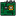
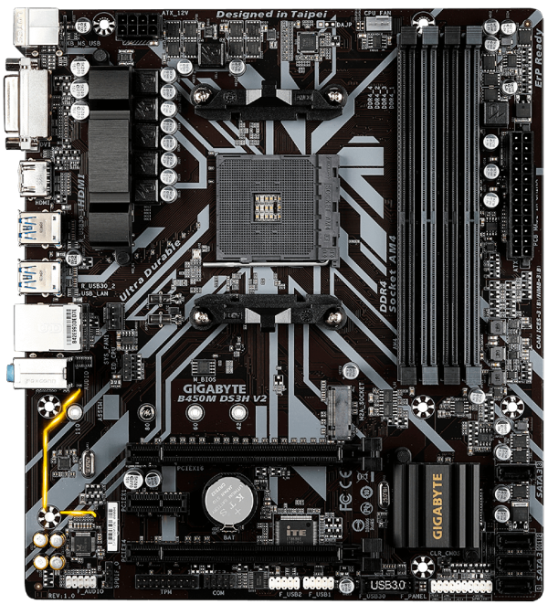
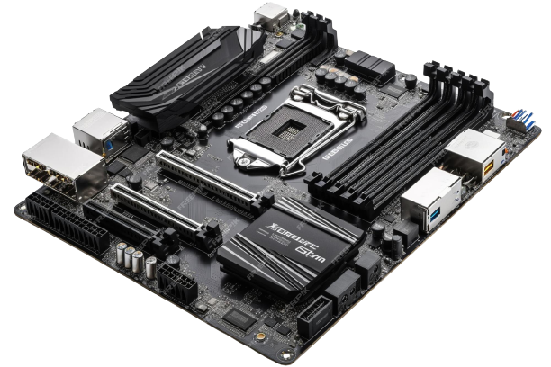

 Placa Mãe
Para que serve?
A placa-mãe, também conhecida como motherboard, é uma das peças mais importantes em um computador. A placa-mãe é o ponto central de conexão para todos os principais componentes, como processador, memória RAM, placas de vídeo, discos rígidos e dispositivos periféricos.
O que tem nela?
A placa-mãe contém um chip de BIOS (Sistema Básico de Entrada/Saída) que controla inicialização, configurações de hardware e comunicação entre os componentes.
- Slots de Expansão: Ela possui slots que permitem adicionar placas de expansão, como placas de vídeo dedicadas, placas de som ou placas de rede.
- Portas e Conexões: A placa-mãe oferece várias portas e conexões, incluindo USB, áudio, Ethernet, HDMI, VGA, entre outras.
- Soquete do Processador: O processador se encaixa em um soquete específico na placa-mãe, determinando o tipo e modelo compatível.
- Diferentes Formas: As placas-mãe vêm em diferentes fatores de forma (ATX, microATX, mini-ITX), que afetam o tamanho do gabinete que você pode usar.
Cuidado
A escolha da placa-mãe certa é crucial, pois ela afeta a compatibilidade, desempenho e expansibilidade do seu sistema de computador. Certifique-se de escolher uma placa-mãe que atenda às suas necessidades específicas e que seja compatível com os componentes que pretende usar.
O que é o socket?
Os sockets são interfaces na placa-mãe onde o processador (CPU) se encaixa. A AMD e a Intel têm suas próprias séries de sockets.
AMD
Os sockets mais comuns para processadores AMD incluem o AM4 e o TR4 (Threadripper). Cada socket tem um número específico de pinos e é compatível com determinadas famílias de processadores AMD.
Intel
A Intel usa vários sockets, como LGA 1200 e LGA 2066 para desktops e LGA 3647 para servidores. Assim como a AMD, cada socket Intel é projetado para acomodar diferentes tipos de processadores. É importante escolher uma placa-mãe com o socket correto para o processador que você pretende usar, pois eles não são compatíveis entre si. Certifique-se de verificar as especificações do processador e da placa-mãe para garantir que eles sejam compatíveis em termos de socket e chipset.
